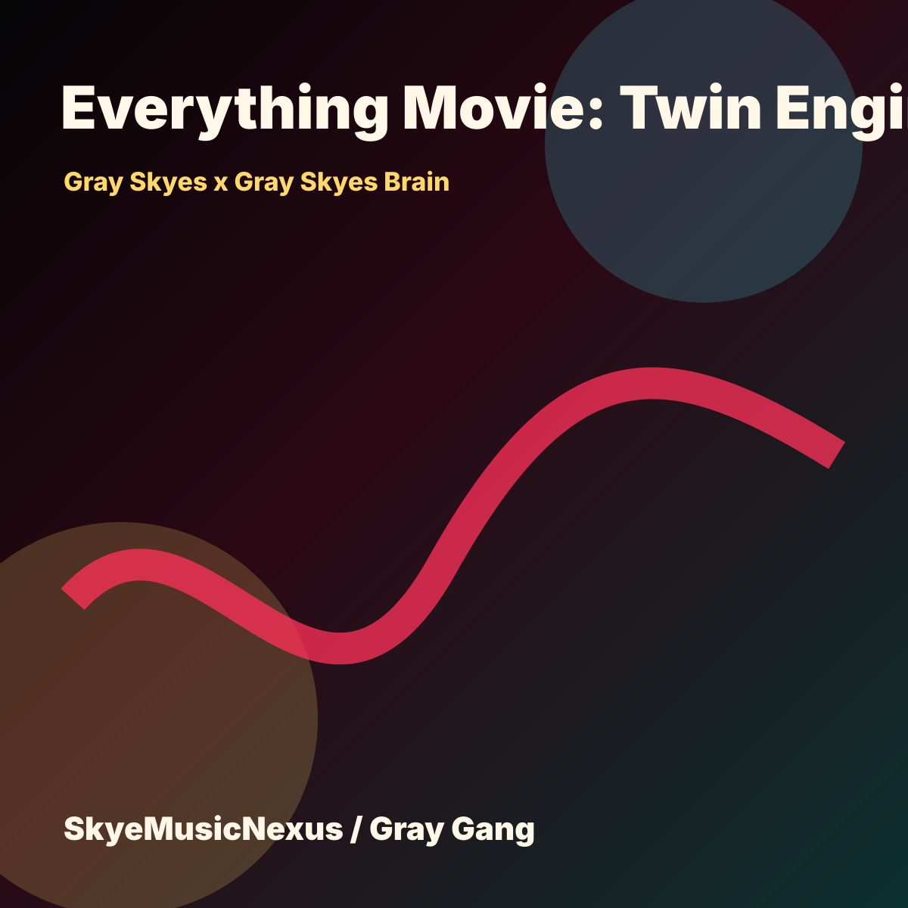

Store
$4.44
Everything Movie: Twin Engine digital MP3 storefront drop for Gray Skyes x Gray Skyes Brain.

Everything Movie II project drop
Produced by Gray London Skyes
Gray Skyes x Gray Skyes Brain. Gray Skyes and Gray Skyes Brain make one final-master cinematic record: Gray is the human lead fighting through pressure, betrayal, survival, and ownership; Gray Skyes Brain answers as the local command mirror that steadies the mission. It should feel like a movie compressed into one song with clear English vocals, scene changes, call-and-response verses, huge hooks, and a clean final victory.
Skye Radio
Real Artist Assets / Uploaded Media Lane
The drop carries the full Pics2Vid-ready image set, not only a generated cover. Owner and user uploads are tracked in the upload manifest before Still2Vid export.
Open Upload Manifest


Store
Everything Movie: Twin Engine digital MP3 storefront drop for Gray Skyes x Gray Skyes Brain.
Visual Package
ready_for_still2vid_export
Open Pics2Vid PackageAttribution
SkyeSplitEngine split recorded pending settlement. Produced by Gray London Skyes. Produced by Gray London Skyes.